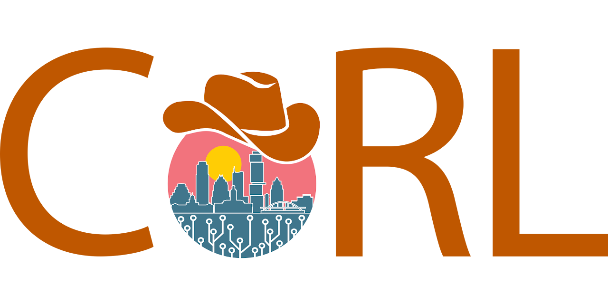
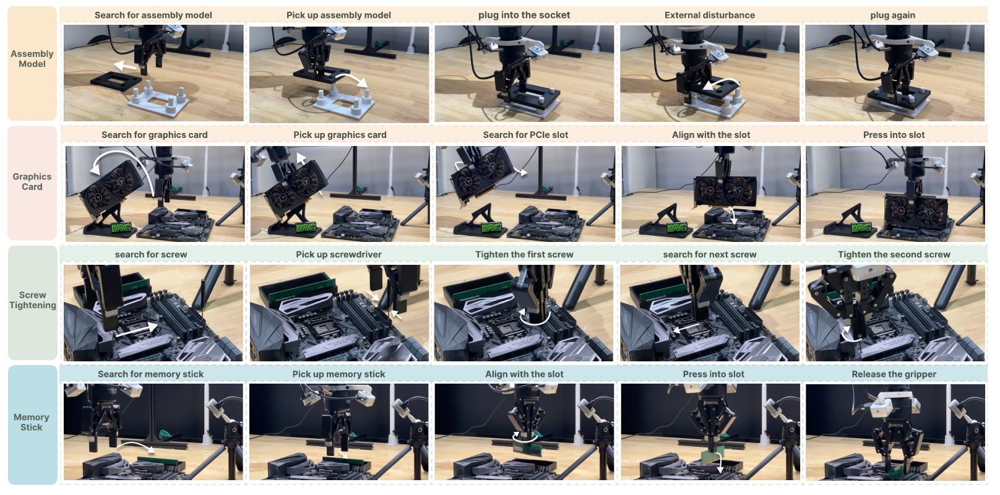

01

2026Graph-Reweighted Behavior Cloning with Human Interventions for Precise Robotic Manipulation
Find the action chunks that actually move the task forward
Demonstrations
Interventions
Failed rollouts
Project video
GR-BC in the real world.
A two-minute view of precise manipulation, backbone generalization, iterative training, and robustness evaluations. Draw back the task curtain to watch the demo, or reveal it to explore twenty key moments across four manipulation tasks.
Four tasks. Twenty moments of precision.
Explore the four task sequences

Motivation
Long-horizon manipulation data is rarely clean. Even successful demonstrations can contain hesitations, overshoots, failed attempts, and imperfect recoveries. Intervention-assisted rollouts mix autonomous mistakes with delayed expert corrections, while failed episodes can still contain short segments that reconnect the system to a viable path.
Approach
Pipeline
GR-BC keeps the VLA architecture and supervised objective unchanged. Reverse search on a task-conditioned goal-reachability graph estimates remaining steps to success and reweights observed action chunks by their progress. New rollouts refresh the graph and weights for the next offline round.

From mixed experience to better supervision.
Hover a part to follow its role in the learning cycle.
Graph-retrieved progress
How states become progress.
01
Three views, one node.

02
Inside the connections.

03
Paper §4.1–4.3 ↗
Reverse search → remaining cost → progress.
Stable progress → bounded positive weightInsufficient net progress → zero weightExcess regression → zero weight
INTERACTIVE TRAJECTORIESProgress, under
Progress, under
the microscope.
A successful trajectory is rarely a straight line. Open the collection, follow four real-world rollouts from three synchronized cameras, and unfold the details of every setback.
Loading the trajectory observatory…
Reading the signal. Graph progress is a graph-derived estimate, not human-annotated ground truth. The default curve uses a centered 15-frame moving average; select Raw trace to inspect the original values. Dip values follow the selected curve. Transition weights use their own 0–1.5 scale. Pale orange marks recorded human-intervention frames; the rose-tinted dip windows follow the supplied event annotations. Episode annotations describe the motion, alignment corrections, and human–policy control handoffs associated with each dip.
Progress evidence
Experiment
GRP follows task completion while dropping at detours, reorientation, and slip-outs — the local failures that a monotonic trajectory score can miss.
Progress estimator comparison
| Method | ΔSF ↑Success–failure gap | ρdev ↑Deviation detection | Class. SE ↑Successful episodes | Class. FE ↑Failed episodes | Failure data | Progress labels |
|---|---|---|---|---|---|---|
| ReWiND | 0.003 | 0 | 30/30 | 1/30 | — | — |
| SARM | 0.24 | 0.48 | 26/30 | 14/30 | — | ✓ |
| Robo-Dopamine | 0.29 | 0.59 | 29/30 | 8/30 | — | ✓ |
| RoboMeter | 0.159 | 0.69 | 30/30 | 6/30 | ✓ | ✓ |
| GRP (ours) | 0.97 | 0.92 | 30/30 | 30/30 | ✓ | — |
Policy improvement
91% average final success.
In the iterative X-VLA evaluation, GR-BC reaches the highest final success rate on all four tasks and improves more consistently than DAgger, AWR, and reward-aware BC.
Graph ablation Why the conservative graph matters
98.3%failed-rollout node reachability
25.0%zero-weight chunk ratio
0.42pre-intervention / normal weight
0.0%gripper-mismatched edges
Cross-trajectory edges recover goal-reachable states from failed rollouts. The gripper-state constraint removes incompatible visual shortcuts while preserving useful recovery connections.
Real-world rollouts
Robustness
Four tasks, in motion.
02
Memory stick
0:3603
Screw tightening
1:3104
Assembly model
0:53
Scroll sideways to explore
Citation
Cite this work.
Use the BibTeX below to cite this work.
@inproceedings{li2026grbc,
title = {Graph-Reweighted Behavior Cloning with Human Interventions
for Precise Robotic Manipulation},
author = {Li, Xiaoman and Yang, Zhiqiang and Hu, Jiayu and Kong, Jipeng and
Zhang, Yang and Zhang, Jingwei and Yan, Fangzheng and
Shen, Chunhua and Bai, Chenjia},
booktitle = {Conference on Robot Learning},
year = {2026}
}